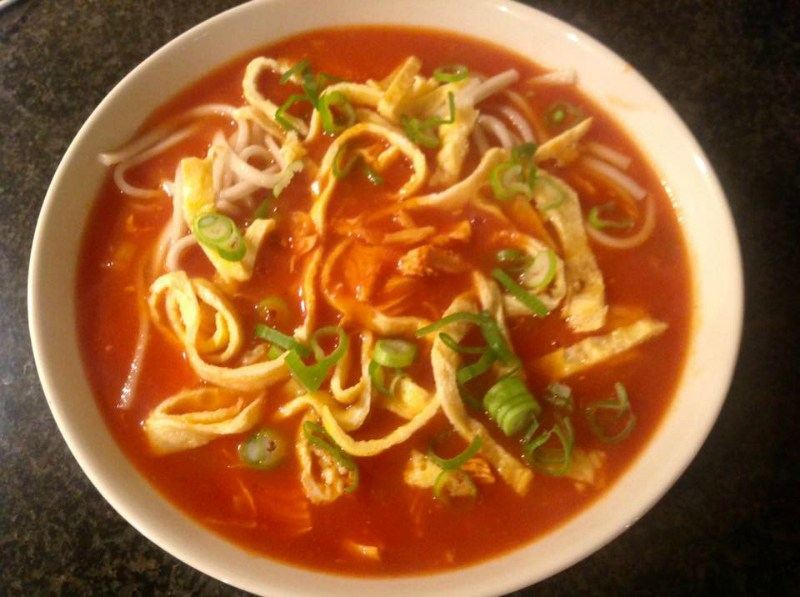

Chinese tomatensoep
Dit is een heerlijke soep die je als voorgerecht kan gebruiken
Ingrediënten voor 8 personen
1 liter water
1 liter tomatensap
2 kipfilets
2 kippenbouillonblokjes
1 ui
2 tenen knoflook
blikje tomatenpuree
6 eetlepels suiker
4 eetlepels ketjap
2 eetlepels azijn
1 borrellepeltje sambal
1 borrellepeltje djahe(gemerpoeder)
1 borrellepeltje sereh(citroengras)
2 eetlepels maïzena
Handje vol mihoen
Bereidingswijze
- roerbak de ui totdat deze glazig is. Voeg het vlees toe en bak dit even aan.
- Voeg de knolfook en de tomatenpuree toe.
- Blus af met een liter water. Voeg de bouillonblokjes toe. Laat een uurtje zachtjes pruttelen.
- Haal het vlees uit de bouillon
- Voeg 1 liter tomatensap toe en breng aan de kook
- Zet het vlees gesneden in een apart schaaltje
- Maak in een ander schaaltje een prutje van: suiker, ketjap, azijn, sambal, dajahe en sereh
- Roer dit prutje en voeg dit aan de tomatenbouillon toe
- Roer de maizena door een kopje koud water, roer dit tot een gladde massa en voeg dit aan de soep toe (binden)
- Voeg de mihoen toe
- Laat alles 20 minuten zachtjes doorkoken
- Vlees toevoegen

Na 1 dag bewaren is de soep de 2de dag nog lekkerder